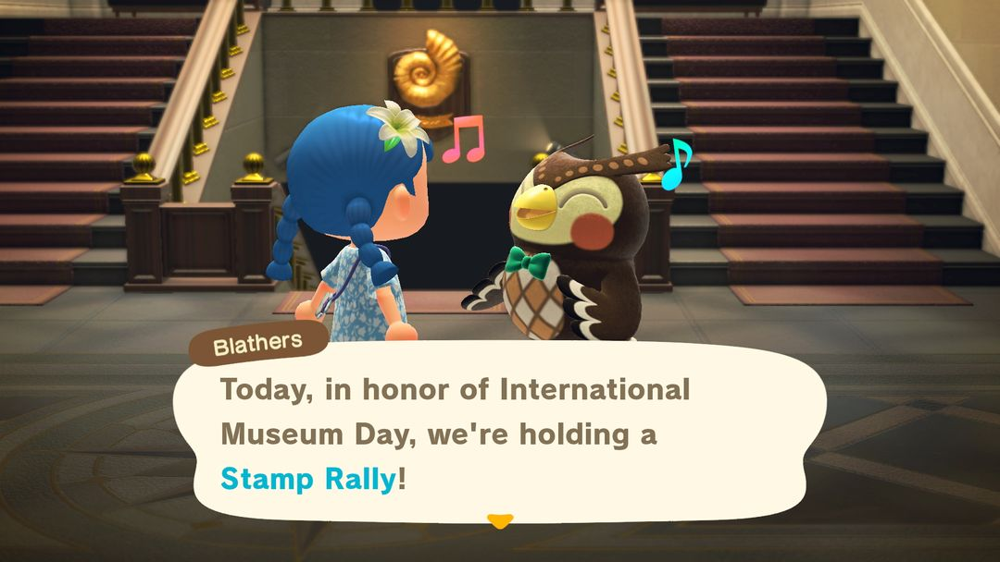
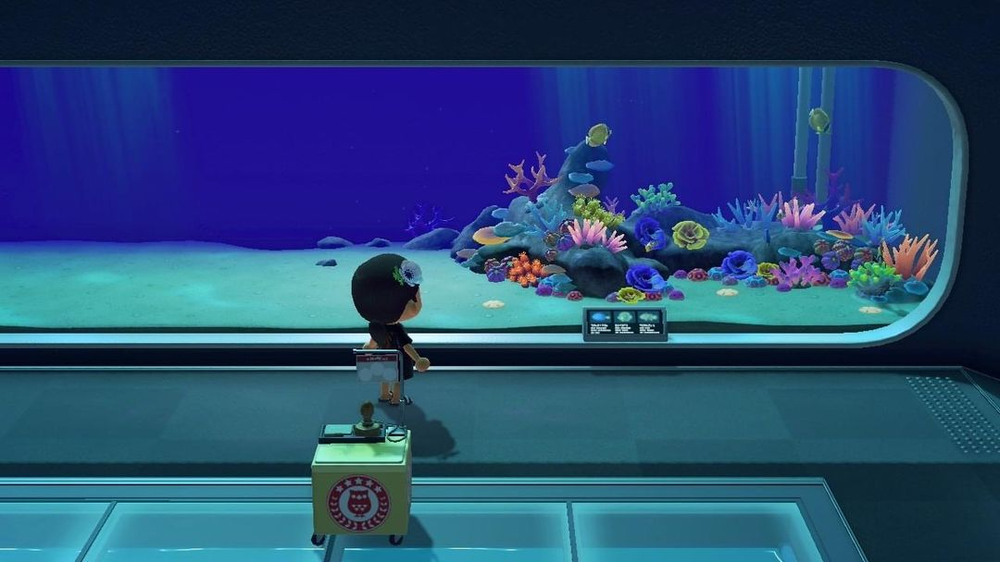
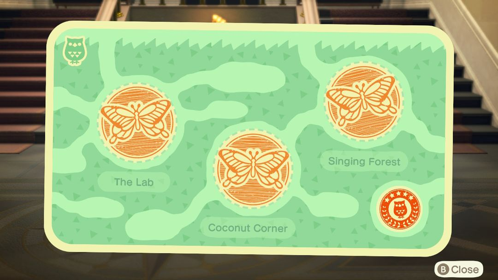
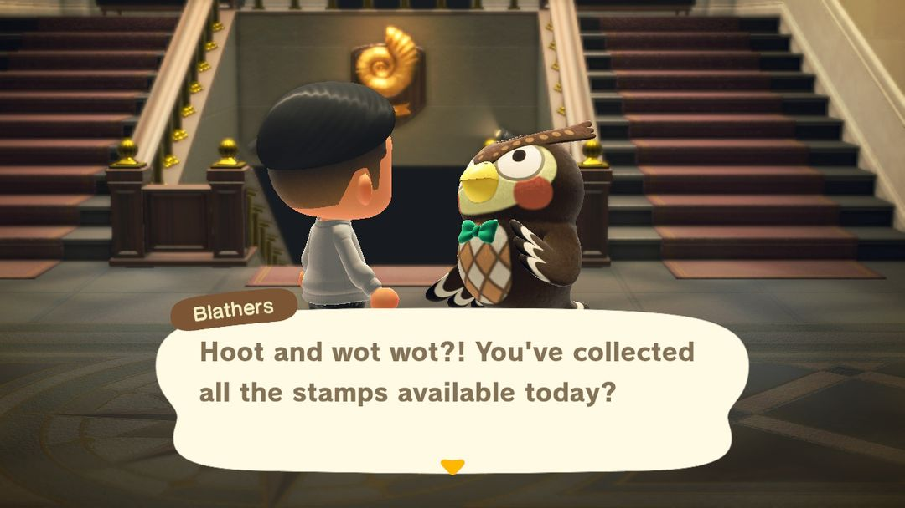

国际博物馆日：在博物馆集章，找傅达换挂饰
每年 5 月 18 日到 31 日，四个展区四张章卡
国际博物馆日是傅达在博物馆里办的集章活动，每年 5 月 18 日到 31 日，南北半球是同一段日子。活动期间，虫、鱼、化石、美术四个展区里各摆着几个盖章台，一个展区盖满就能找傅达换一块这个展区的挂饰。挂饰商店里买不到，只有这个活动能拿到。
这个活动不用提前准备什么，活动期间进博物馆转一圈就行。它真正划算的地方是每天都能再集一轮：挂饰一块能卖 2,500 铃钱，14 天里天天去，攒下的铃钱相当可观。博物馆还没盖出美术展区的话，美术那张卡做不了，这个后面会说。

大厅里的傅达：为了国际博物馆日，馆里在办集章（英文版画面）（图：Nookipedia）
01什么时候
日期是固定的：每年 5 月 18 日到 5 月 31 日，一共 14 天，南北半球一样。现实里的国际博物馆日就是 5 月 18 日，游戏从这一天开始，连着办两周。
活动开始前和进行中，岛上的公告都会提醒你。博物馆全天开门，白天没空的话，晚上过去也一样能集。
02怎么玩
整个流程很短，按下面几步走：
· 第一步，进博物馆，先找大厅里的傅达说话，他会把规则讲一遍。
· 第二步，去虫、鱼、化石、美术四个展区里找带印章的小台子，每个展区有 3 个，走到跟前按 A 盖章。
· 第三步，某个展区的 3 个章盖满了，就回大厅找傅达，他会在卡上盖一个完成章，再把这个展区的挂饰送给你。
· 第四步，四个展区都交完，傅达会再夸你一次，当天的集章就结束了。
盖章台每天都会换位置，不过只会在固定的那几个地方里轮换。各展区可能出现的位置数，和比较好找的几个点，列在下面：
| 展区 | 位置数 | 好找的几个 |
| 虫 | 11 | 蝴蝶房南边、大树右边、瀑布后的木桥 |
| 鱼 | 10 | 小鱼缸前、池塘前、珊瑚礁中间、矛尾鱼那片深海 |
| 化石 | 7 | 入口左右两侧、梁龙前面、双叶铃木龙前面 |
| 美术 | 4 | 雕塑旁、后厅左边、东西方美术品附近 |
虫展区可能的位置最多，有 11 处，找起来最费工夫；美术展区只有 4 处，转一圈基本就能碰上。

鱼展区珊瑚礁前的盖章台（图：Nookipedia）

盖满 3 个章的虫展区章卡，右下角是傅达的完成章（英文版画面）（图：Nookipedia）
03能拿到什么
每张章卡集满，换的是对应展区的一块挂饰，四块卖价都一样：
| 章卡 | 奖励 | 卖价（铃钱） |
| 虫 | 虫儿挂饰 | 2,500 |
| 鱼 | 鱼儿挂饰 | 2,500 |
| 化石 | 化石挂饰 | 2,500 |
| 美术 | 艺术挂饰 | 2,500 |
挂饰是挂在墙上的家具，商店里买不到，只能靠这个活动拿。四块凑齐挂在一面墙上，正好是一套。
04几个小技巧
一个展区一个展区地来。盖满一张卡就回大厅交给傅达，再去下一个展区。盖章台在展区里绕一圈一般都能看见，可以先去上面表里那几个常见位置瞅瞅，没有再细找。
每天都能再领一轮。第二天盖章台换了位置，集满换来的还是那 4 块挂饰。用不着的直接卖掉，一天最多 4 块、10,000 铃钱，14 天每天都来的话，最多能卖到 14 万铃钱。
博物馆还没有美术展区的岛，美术那张卡做不了。得先在狐利那里买到真的艺术品捐给傅达，博物馆才会加盖美术展区。活动只有两周，赶得上的话可以先把这件事办了。
四块挂饰摆在一起。挂在博物馆风格的房间里很合适，自己先留一套，多出来的再卖。

四个展区都盖满，傅达会说当天的章都集齐了（英文版画面）（图：Nookipedia）
05版本变化
这个活动是 2020 年的 1.2.0 加进来的，当时只有虫、鱼、化石三个展区有盖章台。2021 年的 1.10.0 补上了美术展区的盖章台，挂饰的卖价也从 300 涨到 2,500。2.0 和 3.0 的更新说明里都没提到这个活动。
动森圈圈 · 小程序和 iOS App 都搜「动森圈圈」